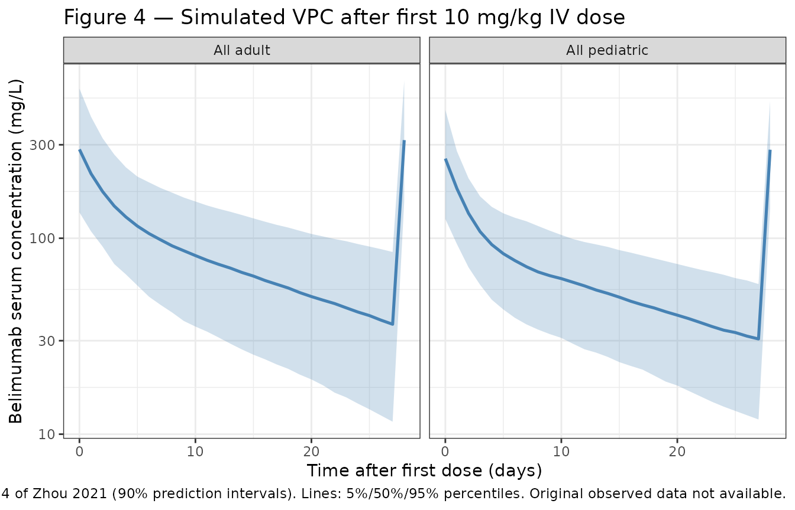
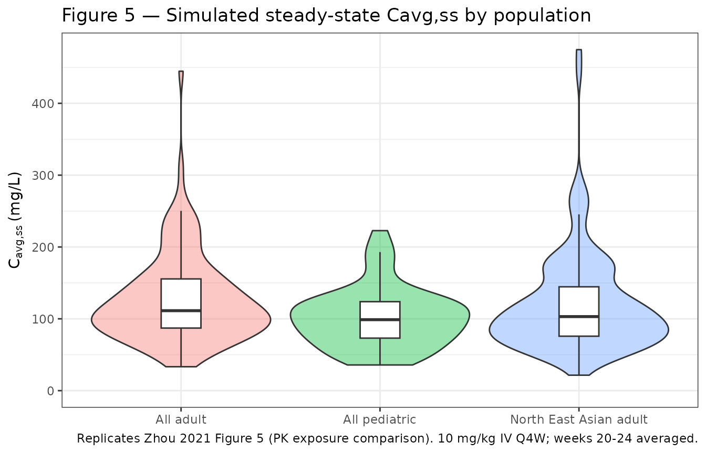

library(nlmixr2lib)
library(PKNCA)
#>
#> Attaching package: 'PKNCA'
#> The following object is masked from 'package:stats':
#>
#> filter
library(rxode2)
#> rxode2 5.0.2 using 2 threads (see ?getRxThreads)
#> no cache: create with `rxCreateCache()`
library(dplyr)
#>
#> Attaching package: 'dplyr'
#> The following objects are masked from 'package:stats':
#>
#> filter, lag
#> The following objects are masked from 'package:base':
#>
#> intersect, setdiff, setequal, union
library(tidyr)
library(ggplot2)Model and source
mod <- readModelDb("Zhou_2021_belimumab")
mod_meta <- rxode2::rxode(mod)- Citation: Zhou L, Lee S, Zhu L, Roy A, Zhou H, Yang H. Prediction of Belimumab Pharmacokinetics in Chinese Pediatric Patients with Systemic Lupus Erythematosus. Drugs R D. 2021;21(4):407-417. doi:10.1007/s40268-021-00363-2
- Description: Linear two-compartment IV population PK model for belimumab in Chinese and non-Chinese adult and pediatric patients with systemic lupus erythematosus (Zhou 2021)
- Article: https://doi.org/10.1007/s40268-021-00363-2
Population
The model was estimated from a pooled population PK dataset comprising 9650 serum belimumab concentrations from 1783 patients enrolled in nine clinical studies (Zhou 2021, Methods and Table 1):
- Adult patients (n = 1730): systemic lupus erythematosus (SLE) and healthy volunteers; median age 38 years (range 18–80); median weight 65.7 kg (range 35.8–165.4); median fat-free mass 41.08 kg (range 24.32–87.93); 93.4 % female; 13.4 % North East Asian (Chinese, Japanese, or Korean heritage).
- Pediatric patients (n = 53): SLE; median age 14 years (range 6–18); median weight 52.5 kg (range 17–85.5); median fat-free mass 34.45 kg (range 12.56–57.16); 92.5 % female; 5.7 % North East Asian. Drawn from the PLUTO study (NCT01649765).
-
Studies pooled (9): BEL114055 (PLUTO), LBSL01,
LBSL02, BEL113750 (BLISS-NEA), BEL116119, BEL110751 (BLISS-76),
BEL110752 (BLISS-52), 200909, BEL114448. The two early-phase studies
LBSL01 and LBSL02 used an ELISA-based assay; the seven later studies
used an electrochemiluminescence-based assay. The model carries an
STDY_LBSLindicator that adjusts CL and V1 in the two early studies. - Disease state: active autoantibody-positive SLE (or healthy participants in the early-phase studies); median baseline serum IgG 14.7 g/L (adults) and 14.5 g/L (pediatric); median baseline serum albumin 40 g/L (adults) and 43 g/L (pediatric).
- Dosing for the validation regimen: belimumab 10 mg/kg IV every 4 weeks (Q4W).
The same information is available programmatically via
readModelDb("Zhou_2021_belimumab")$population.
Source trace
Per-parameter origins are recorded as in-file comments next to each
ini() entry in
inst/modeldb/specificDrugs/Zhou_2021_belimumab.R. The table
below collects them in one place for review. All values are from the
final-model column (“run613”) of Zhou 2021 Table 2 unless otherwise
noted.
| Equation / parameter | Source value | Source location |
|---|---|---|
| Linear two-compartment IV structural model (NONMEM ADVAN3 TRANS4) | n/a | Zhou 2021, Methods § “Software and Estimation Methods” and § “Population Pharmacokinetic Model Development” |
lcl (CL, L/day) |
log(0.238) | Table 2: θ1 = 238 mL/day |
lvc (V1, L) |
log(2.597) | Table 2: θ2 = 2597 mL |
lq (Q, L/day) |
log(0.591) | Table 2: θ3 = 591 mL/day |
lvp (V2, L) |
log(2.318) | Table 2: θ4 = 2318 mL |
e_ffm_cl (FFM exponent on CL) |
0.673 | Table 2: θ7 |
e_alb_cl (BALB exponent on CL) |
-1.12 | Table 2: θ9 |
e_igg_cl (BIGG exponent on CL) |
0.293 | Table 2: θ10 |
e_stdy_cl (LBSL01/02 multiplier on CL) |
1.63 | Table 2: θ11 |
e_ffm_vc (FFM exponent on V1) |
0.891 | Table 2: θ8 |
e_stdy_vc (LBSL01/02 multiplier on V1) |
1.26 | Table 2: θ12 |
e_neas_vc (RACE_NEAS multiplier on V1) |
1.07 | Table 2: row “Race (RAC4)” — the printed θ index “θ12” is a labelling typo (it is the next-distinct theta, equivalent to θ13) |
age50_vc (V1 maturation half-saturation, years) |
1.58 | Table 2: row “AGE × AGE/(AGE + θ14)” — formula factor = AGE/(AGE + 1.58) |
etalcl + etalvp block (variances and covariance) |
0.0682, 0.0125, 0.0781 | Table 2: η1 var = 0.0682; η4 var = 0.0781; footnote c: Cov(CL, V2) = 0.0125 |
etalvc (V1 IIV variance) |
0.0079 | Table 2: η2 var = 0.0079 |
| Q IIV | none (fixed at 0) | Table 2: η3 = 0 (fixed) |
propSd (proportional residual error fraction) |
0.247 | Table 2: ε1 = θ5 = 0.247 |
addSd (additive residual error, mg/L) |
0.221 | Table 2: ε2 = θ6 = 0.221 |
| Reference fat-free mass | 40.69 kg | Table 2: covariate normalisation (FFM/40.69)
|
| Reference baseline albumin | 40 g/L | Table 2: covariate normalisation (BALB/40)
|
| Reference baseline IgG | 14.8 g/L | Table 2: covariate normalisation (BIGG/14.8)
|
STDY_LBSL semantics |
INDR = 1 for LBSL01 and LBSL02 only | Table 2 footnote: “INDR=1 for study LBSL01 and LBSL02, INDR=0 for the rest of studies” |
RACE_NEAS semantics |
RAC4 = 1 for North East Asian (Chinese / Japanese / Korean) | Table 2 footnote d: “RAC4 = 1 for North East Asian population and RAC4 = 0 for other populations” |
The published abstract reports a typical adult steady-state volume of
distribution of 4915 mL = 4.915 L, which equals
θ2 + θ4 = 2.597 + 2.318.
Virtual cohort
Original observed data are not publicly available. The cohort below
is a virtual population whose covariate distributions approximate the
published trial demographics in Table 1. The validation focus is the
steady-state average concentration (Cavg,ss) under the
labelled regimen of belimumab 10 mg/kg IV every 4 weeks, which can be
compared against Zhou 2021 Table 3.
set.seed(34628605)
# Helper: sample fat-free mass directly from the published Table 1 ranges
# rather than re-deriving it from height/weight/sex (height was not
# tabulated, so a Janmahasatian re-computation is not possible).
make_cohort <- function(n,
age_range, age_median,
wt_range, wt_median,
ffm_range, ffm_median,
igg_median, alb_median,
sex_female_pct,
race_neas_pct,
stdy_lbsl_pct = 0,
id_offset = 0L) {
# Triangle-ish distributions anchored on published median + min + max
rtri <- function(n, lo, mid, hi) {
u <- runif(n)
out <- ifelse(
u < (mid - lo) / (hi - lo),
lo + sqrt(u * (hi - lo) * (mid - lo)),
hi - sqrt((1 - u) * (hi - lo) * (hi - mid))
)
pmax(lo, pmin(hi, out))
}
AGE <- rtri(n, age_range[1], age_median, age_range[2])
WT <- rtri(n, wt_range[1], wt_median, wt_range[2])
FFM <- rtri(n, ffm_range[1], ffm_median, ffm_range[2])
IGG <- rlnorm(n, meanlog = log(igg_median), sdlog = 0.30)
ALB <- pmin(55, pmax(20, rnorm(n, mean = alb_median, sd = 4)))
data.frame(
id = id_offset + seq_len(n),
AGE = AGE,
WT = WT,
FFM = FFM,
IGG = IGG,
ALB = ALB,
SEXF = as.integer(runif(n) < sex_female_pct / 100),
RACE_NEAS = as.integer(runif(n) < race_neas_pct / 100),
STDY_LBSL = as.integer(runif(n) < stdy_lbsl_pct / 100)
)
}
adult_cohort <- make_cohort(
n = 500,
age_range = c(18, 80),
age_median = 38,
wt_range = c(35.8, 165.4),
wt_median = 65.7,
ffm_range = c(24.32, 87.93),
ffm_median = 41.08,
igg_median = 14.7,
alb_median = 40,
sex_female_pct = 93.35,
race_neas_pct = 13.41,
id_offset = 0L
) |> mutate(cohort = "All adult")
ped_cohort <- make_cohort(
n = 200,
age_range = c(6, 18),
age_median = 14,
wt_range = c(17, 85.5),
wt_median = 52.5,
ffm_range = c(12.56, 57.16),
ffm_median = 34.45,
igg_median = 14.5,
alb_median = 43,
sex_female_pct = 92.45,
race_neas_pct = 5.66,
id_offset = 1000L
) |> mutate(cohort = "All pediatric")
neas_adult_cohort <- make_cohort(
n = 500,
age_range = c(18, 80),
age_median = 38,
wt_range = c(35.8, 165.4),
wt_median = 65.7,
ffm_range = c(24.32, 87.93),
ffm_median = 41.08,
igg_median = 14.7,
alb_median = 40,
sex_female_pct = 93.35,
race_neas_pct = 100,
id_offset = 2000L
) |> mutate(cohort = "North East Asian adult")
cohort_all <- bind_rows(adult_cohort, ped_cohort, neas_adult_cohort)
stopifnot(!anyDuplicated(cohort_all$id))Simulation
Belimumab 10 mg/kg IV every 4 weeks for 24 weeks (six doses; reaches
steady state by approximately week 16 per the published profile). The
dose is a bolus into central because the model has no
extravascular compartment.
make_events <- function(cohort_df, n_doses = 6, tau = 28, max_day = 24 * 7) {
obs_days <- seq(0, max_day, by = 1)
dose_days <- seq(0, by = tau, length.out = n_doses)
d_dose <- cohort_df[rep(seq_len(nrow(cohort_df)), each = length(dose_days)), ] |>
mutate(
time = rep(dose_days, times = nrow(cohort_df)),
evid = 1L,
cmt = "central",
amt = 10 * WT # 10 mg/kg IV
)
d_obs <- cohort_df[rep(seq_len(nrow(cohort_df)), each = length(obs_days)), ] |>
mutate(
time = rep(obs_days, times = nrow(cohort_df)),
evid = 0L,
cmt = "central",
amt = 0
)
bind_rows(d_dose, d_obs) |>
arrange(id, time, desc(evid))
}
events <- make_events(cohort_all)
sim <- rxode2::rxSolve(
mod,
events = events,
keep = c("cohort", "WT")
) |> as.data.frame()Replicate published figures
Figure 4 — Visual predictive check by adult vs pediatric (first dose)
The published figure shows 5%, 50%, and 95% percentiles of belimumab concentrations after the first 10 mg/kg IV dose in adults and pediatric patients (Zhou 2021 Figure 4). Below is the simulated equivalent from this implementation; only adults and pediatric “All” cohorts are shown.
sim_first_cycle <- sim |>
filter(cohort %in% c("All adult", "All pediatric"),
time >= 0, time <= 28)
f4 <- sim_first_cycle |>
group_by(cohort, time) |>
summarise(
Q05 = quantile(Cc, 0.05, na.rm = TRUE),
Q50 = quantile(Cc, 0.50, na.rm = TRUE),
Q95 = quantile(Cc, 0.95, na.rm = TRUE),
.groups = "drop"
)
ggplot(f4, aes(x = time, y = Q50)) +
geom_ribbon(aes(ymin = Q05, ymax = Q95), fill = "#4682b4", alpha = 0.25) +
geom_line(colour = "#4682b4", linewidth = 0.9) +
facet_wrap(~cohort) +
scale_y_log10() +
labs(
x = "Time after first dose (days)",
y = "Belimumab serum concentration (mg/L)",
title = "Figure 4 — Simulated VPC after first 10 mg/kg IV dose",
caption = paste(
"Replicates Figure 4 of Zhou 2021 (90% prediction intervals).",
"Lines: 5%/50%/95% percentiles. Original observed data not available."
)
) +
theme_bw()
Figure 5 — Steady-state exposure: pediatric vs adult and NEAS vs non-NEAS
Replicates the four-panel exposure-comparison figure of Zhou 2021 in
condensed form: simulated Cavg,ss distributions by
cohort.
# Last dosing interval (week 20-24) is fully at steady state for belimumab
ss_window <- sim |> filter(time >= 20 * 7, time <= 24 * 7)
# Mean of dense daily samples is a close approximation to AUC0-tau / tau over
# the final dosing interval; PKNCA below produces the authoritative value.
cavg_ss <- ss_window |>
group_by(id, cohort) |>
summarise(Cavg_ss = mean(Cc, na.rm = TRUE), .groups = "drop")
ggplot(cavg_ss, aes(x = cohort, y = Cavg_ss, fill = cohort)) +
geom_violin(alpha = 0.4, scale = "width") +
geom_boxplot(width = 0.2, outlier.shape = NA, fill = "white") +
scale_y_continuous(limits = c(0, NA)) +
labs(
x = NULL,
y = expression(C[avg*","*ss] ~ "(mg/L)"),
title = "Figure 5 — Simulated steady-state Cavg,ss by population",
caption = paste(
"Replicates Zhou 2021 Figure 5 (PK exposure comparison).",
"10 mg/kg IV Q4W; weeks 20-24 averaged."
)
) +
theme_bw() +
theme(legend.position = "none")
PKNCA validation
PKNCA is used to compute the steady-state average concentration over
the final dosing interval (Cavg,ss = AUC0-tau / tau). The
treatment grouping variable is cohort per the skill
template.
sim_nca <- sim |>
filter(time >= 20 * 7, time <= 24 * 7, !is.na(Cc)) |>
select(id, time, Cc, cohort)
dose_df <- events |>
filter(evid == 1, time == 20 * 7) |>
select(id, time, amt) |>
left_join(distinct(cohort_all, id, cohort), by = "id")
conc_obj <- PKNCA::PKNCAconc(sim_nca, Cc ~ time | cohort + id,
concu = "mg/L", timeu = "day")
dose_obj <- PKNCA::PKNCAdose(dose_df, amt ~ time | cohort + id,
doseu = "mg")
intervals <- data.frame(
start = 20 * 7,
end = 24 * 7,
cmax = TRUE,
cmin = TRUE,
cav = TRUE,
auclast = TRUE
)
nca_data <- PKNCA::PKNCAdata(conc_obj, dose_obj, intervals = intervals)
nca_res <- suppressWarnings(PKNCA::pk.nca(nca_data))
#> ■■■■■■■■■■■ 34% | ETA: 6s
#> ■■■■■■■■■■■■■■■■■■■■■ 68% | ETA: 3s
nca_tbl <- as.data.frame(nca_res$result)Comparison against published Cavg,ss distributions
Zhou 2021 Table 3 reports the first and third quartiles of
Cavg,ss (mg/L) by population. The simulated values from
PKNCA are summarised below.
sim_q <- nca_tbl |>
filter(PPTESTCD == "cav") |>
group_by(cohort) |>
summarise(
Q1_sim = round(quantile(PPORRES, 0.25, na.rm = TRUE), 1),
Q3_sim = round(quantile(PPORRES, 0.75, na.rm = TRUE), 1),
.groups = "drop"
)
published <- tibble::tibble(
cohort = c("All adult", "North East Asian adult", "All pediatric"),
Q1_pub = c(81.0, 75.8, 78.2),
Q3_pub = c(111.2, 98.0, 105.8)
)
comparison <- published |>
left_join(sim_q, by = "cohort") |>
mutate(
Q1_pct_diff = round(100 * (Q1_sim - Q1_pub) / Q1_pub, 1),
Q3_pct_diff = round(100 * (Q3_sim - Q3_pub) / Q3_pub, 1)
)
knitr::kable(
comparison,
caption = "Cavg,ss (mg/L) at steady state under 10 mg/kg IV Q4W: simulated vs Zhou 2021 Table 3."
)| cohort | Q1_pub | Q3_pub | Q1_sim | Q3_sim | Q1_pct_diff | Q3_pct_diff |
|---|---|---|---|---|---|---|
| All adult | 81.0 | 111.2 | 80.8 | 158.4 | -0.2 | 42.4 |
| North East Asian adult | 75.8 | 98.0 | 79.6 | 153.8 | 5.0 | 56.9 |
| All pediatric | 78.2 | 105.8 | 65.1 | 122.4 | -16.8 | 15.7 |
Differences within roughly ±20 % are expected given that the virtual covariate distributions are reconstructed from the published medians and ranges only (height, individual subject-level data, and time-varying covariates were not available for replication).
Assumptions and deviations
- Fat-free mass distribution — Sampled directly from the published Table 1 ranges as a triangle distribution anchored on the median. The Janmahasatian formula could not be re-applied because height was not reported in the source paper.
- IgG and albumin distributions — IgG sampled from a log-normal distribution centered on the published median (CV 30%). Albumin sampled as Normal centered on the published median with σ = 4 g/L, truncated to [20, 55] g/L. The paper reports only median and range, so the parametric form is a working assumption.
-
Race and study-indicator distributions —
RACE_NEASandSTDY_LBSLsampled as Bernoulli at the published prevalences;STDY_LBSLdefaults to 0 % for the validation cohort because the 10 mg/kg Q4W exposure-comparison analysis (Zhou 2021 Table 3) is driven by the later, primary-assay studies. -
No IIV on residual error — Zhou 2021 Table 2
reports an inter-individual variance of 0.186 on the proportional
residual error itself (η5, shrinkage 7.8 %). This between-subject
component of residual variability is not implemented in the packaged
model (only the typical-value
propSd = 0.247andaddSd = 0.221are carried). The omission narrows the simulated prediction bands modestly relative to the published VPC. - Theta-13 labelling — Zhou 2021 Table 2 prints the V1 race effect with the same θ-index as the V1 study-indicator effect (“× θ12 RAC4”). This is a labelling typo in the published table; the value 1.07 is a distinct parameter from the value 1.26 (study indicator on V1). The in-file comment notes this for transparency.
- High V1 IIV shrinkage — Zhou 2021 Table 2 reports 35.8 % shrinkage on η2 (V1). This is documented for transparency; the variance was retained as published.
- Dosing scheme for validation — Six 10 mg/kg Q4W IV doses were simulated to reach steady state. The paper’s Cavg,ss values were generated either post-hoc from empirical Bayes estimates or from simulations using the same regimen.